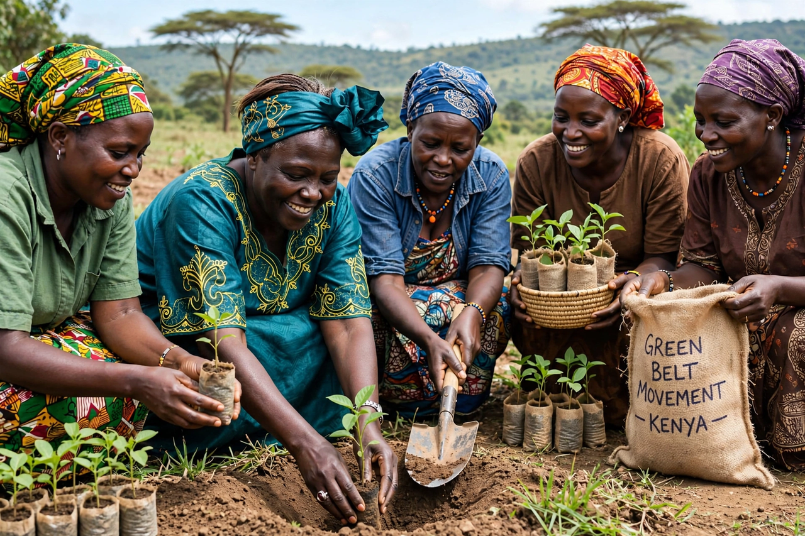

Wangari Maathai
| Wangari Maathai | |
|---|---|
| Born | 1 April 1940, Ihithe, Kenya |
| Died | 25 September 2011, Nairobi, Kenya |
| Known for | Green Belt Movement; Nobel Peace Prize 2004 |

Wangari Maathai (1 April 1940 – 25 September 2011) was a Kenyan environmental and political activist who founded the Green Belt Movement in 1977, mobilising women to plant tens of millions of trees against deforestation and poverty. In 2004 she became the first African woman to receive the Nobel Peace Prize.
The Nobel committee honoured her 'contribution to sustainable development, democracy and peace' — an award that formally linked environment and security in the prize's history.
Life and movement
Maathai was the first woman in East and Central Africa to earn a doctorate (in veterinary anatomy, 1971) and became a professor at the University of Nairobi. Through the National Council of Women of Kenya she launched the Green Belt Movement: women's groups were paid small sums to grow seedlings and plant tree belts, simultaneously restoring land, supplying fuelwood, and giving rural women income and standing. The movement reports tens of millions of trees planted across Kenya and inspired similar programmes in other African countries.
Under President Daniel arap Moi's authoritarian government she became a leading dissident as well as an environmentalist: she was beaten, jailed and vilified for opposing developments such as a skyscraper planned for Nairobi's Uhuru Park (defeated in 1989) and the grabbing of public forests.
Politics and legacy
With multiparty democracy restored, Maathai was elected to parliament in 2002 and served as an assistant minister for environment in Mwai Kibaki's government. Her memoir Unbowed (2006) and her speeches made her a global voice for the idea that environmental protection, women's rights and democracy are one struggle. See {L('Deforestation')} and {L('Conservation_movement')}.
See also: Deforestation · Conservation movement · Environmental protection · Nobel Peace Prize · Kenya